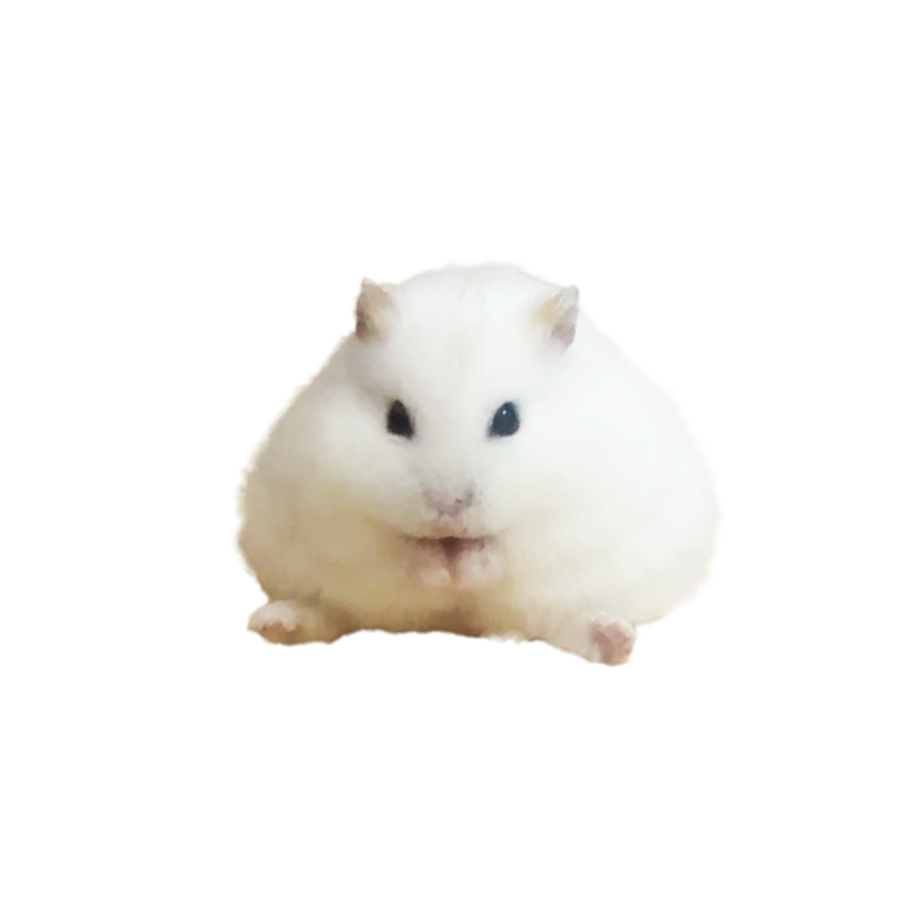

About Potechi
ぽてちについて
ぽてちは10月7日生まれのジャンガリアンハムスターの女の子。
名前の由来は出会ったとき「じゃがいも」に似てたから。でもいまはおにぎりに似てきたよ。
特技は「穴掘り」おやつが大好きなグルメ系ハムスターだよ！
ぽてちのまいにち
朝（AM）
飼い主が起きたら寝る
飼い主さんが起きる時間にねむねむタイム。巣箱の中でウトウトしながら、のんびり毛づくろいをします。
昼（PM）
すやすや時間
基本的にお部屋か穴掘りした穴の中で寝てて、たまにお水を飲みに起きます。
夜（NIGHT）
どたどた・大爆走！
夜になるとぽてちのパワーが大爆発！お気に入りの車輪（回し車）で、朝までで駆け抜けます。